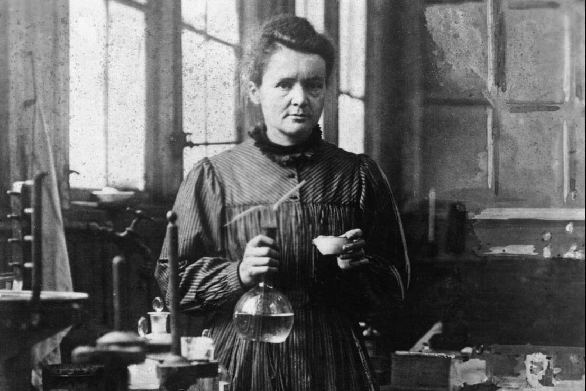
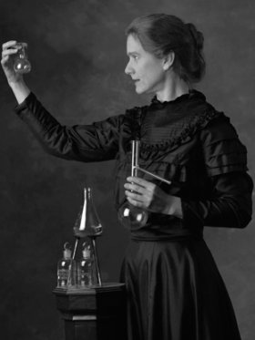

Maria Salomea Skłodowska-Curie , nació el 7 de noviembre de 1867 y murió el 4 de julio de 1934, conocida simplemente como Marie Curie fue una física y química polaca y naturalizada francesa que realizó investigaciones pioneras sobre la radiactividad. Fue la primera mujer en ganar un Premio Nobel , la primera persona en ganarlo dos veces y la única persona en ganarlo en dos campos científicos. Su esposo, Pierre Curie , fue coganador de su primer Premio Nobel, lo que los convirtió en el primer matrimonio en ganarlo e inició el legado de la familia Curie de cinco Premios Nobel. En 1906, fue la primera mujer en convertirse en profesora de la Universidad de París .
MARIE CURIE

| MARIE CURIE | |||
|---|---|---|---|
|  | |||
| INFORMACIÓN PERSONAL | |||
| NOMBRE DE NACIMIENTO | Maria Salomea Skłodowska | ||
| NACIMIENTO | 7 de noviembre de 1867 Varsovia (Imperio ruso) |
||
| FALLECIMIENTO | 4 de julio de 1934 (66 años) Passy (Francia) |
||
| CAUSA DE MUERTE | Anemia aplásica | ||
| SEPULTURA | Panteón de París | ||
| Ciudadanía | Rusa (hasta 1918) y francesa (desde 1895) | ||
| FAMILIA | |||
| PADRES | Władysław Skłodowski Bronisława Boguska |
||
| CÓNYUGUE | Pierre Curie (matr. 1895; viu. 1906) | ||
| HIJOS | Irène y Ève Denise | ||
| EDUCACIÓN | |||
| EDUCACIÓN | licenciatura y doctorado | ||
| EDUCADA EN | La Sorbona | ||
| TESIS DOCTORAL | Recherches sur les substances radioactives (1903) | ||
| SURPERVISORA DOCTORAL | Henri Becquerel Gabriel Lippmann | ||
| INFORMACIÓN PERSONAL | |||
| OCUPACIÓN | Científica | ||
| ÁREA | Física y química | ||
| CONOCIDA POR | descubrimiento del radio y polonio | ||
| CARGOS OCUPADOS | Catedrático | ||
| EMPLEADOR | Escuela Superior de Física y de Química Industriales de París Escuela Normal Superior de París Facultad de Ciencias de la Universidad de París Instituto del Radio del Instituto Pasteur y la Universidad de París |
||
| ESTUDIANTES DOCTORALES | André-Louis Debierne Émile Henriot Marguerite Catherine Perey[ |
||
| ALUMNOS | Ellen Gleditsch e Irene Joliot-Curie | ||
| MIEMBRO DE | Academia de Ciencias de la Unión Soviética Academia de Ciencias de Rusia Real Academia de Artes y Ciencias de los Países Bajos Real Sociedad Científica Checa Sociedad Filosófica Estadounidense (desde 1910) Académie Nationale de Médecine (desde 1922) Comisión sobre Abundancia de Isótopos y Pesos Atómicos (desde 1930) Academia Alemana de las Ciencias Naturales Leopoldina (desde 1932) | ||
Fue la primera mujer en ganar un Premio Nobel , la primera persona en ganarlo dos veces y la única persona en ganarlo en dos campos científicos. Su esposo, Pierre Curie , fue coganador de su primer Premio Nobel, lo que los convirtió en el primer matrimonio en ganarlo e inició el legado de la familia Curie de cinco Premios Nobel. En 1906, fue la primera mujer en convertirse en profesora de la Universidad de París .
Nació en Varsovia , en lo que entonces era el Reino de Polonia , parte del Imperio ruso . Estudió en la Universidad Voladora clandestina de Varsovia y comenzó su formación científica práctica en Varsovia. En 1891, a los 24 años, siguió a su hermana mayor Bronisława para estudiar en París, donde obtuvo sus títulos superiores y dirigió su trabajo científico posterior. En 1895, se casó con el físico francés Pierre Curie , y compartió el Premio Nobel de Física de 1903 con él y con el físico Henri Becquerel por su trabajo pionero en el desarrollo de la teoría de la "radiactividad", un término que ella acuñó. En 1906, Pierre Curie murió en un accidente callejero en París. Marie ganó el Premio Nobel de Química de 1911 por su descubrimiento de los elementos polonio y radio , utilizando técnicas que inventó para aislar isótopos radiactivos .
Bajo su dirección, se realizaron los primeros estudios mundiales sobre el tratamiento de neoplasias mediante isótopos radiactivos. Fundó el Instituto Curie en París en 1920 y el Instituto Curie en Varsovia en 1932; ambos siguen siendo importantes centros de investigación médica. Durante la Primera Guerra Mundial , desarrolló unidades móviles de radiografía para proporcionar servicios de rayos X a hospitales de campaña .Aunque era ciudadana francesa, Marie Skłodowska Curie, que usaba ambos apellidos, nunca perdió su sentido de identidad polaca. Enseñó polaco a sus hijas y las llevó de visita a Polonia. Llamó polonio al primer elemento químico que descubrió , en honor a su país natal.
Marie Curie falleció en 1934, a los 66 años, en el sanatorio Sancellemoz de Passy ( Alta Saboya ), Francia, a causa de una anemia aplásica, probablemente causada por la exposición a la radiación durante su investigación científica y su trabajo radiológico en hospitales de campaña durante la Primera Guerra Mundial.] Además de sus Premios Nobel, recibió numerosos honores y homenajes; en 1995 se convirtió en la primera mujer en ser enterrada por sus propios méritos en el Panteón de París , y Polonia declaró 2011 como el Año de Marie Curie durante el Año Internacional de la Química . Es objeto de numerosas biografías.
la quinta y más joven hija de los conocidos maestros Bronisława, de soltera Boguska, y Władysław Skłodowski . Los hermanos mayores de Maria (apodada Mania ) fueron Zofia (nacida en 1862, apodada Zosia ), Józef [ pl ] (nacido en 1863, apodado Józio ), Bronisława (nacida en 1865, apodada Bronia ) y Helena (nacida en 1866, apodada Hela ).
Władysław Skłodowski enseñaba matemáticas y física, materias que Maria debía cursar, y también era director de dos gimnasios (escuelas secundarias) de Varsovia para niños. Después de que las autoridades rusas eliminaran la instrucción de laboratorio de las escuelas polacas, trajo gran parte del equipo de laboratorio a casa e instruyó a sus hijos en su uso. Finalmente, sus supervisores rusos lo despidieron por sentimientos pro-polacos y lo obligaron a aceptar puestos peor pagados; la familia también perdió dinero en una mala inversión y finalmente decidió complementar sus ingresos alojando a niños en la casa. La madre de Maria, Bronisława, dirigía un prestigioso internado para niñas en Varsovia; renunció al puesto después del nacimiento de Maria. Murió de tuberculosis en mayo de 1878, cuando Maria tenía diez años. Menos de tres años antes, la hermana mayor de Maria, Zofia, había muerto de tifus contraído de una interna. El padre de María era ateo y su madre una católica devota. La muerte de la madre y la hermana de María la llevaron a abandonar el catolicismo y volverse agnóstica.
Cuando tenía diez años de edad, Maria Skłodowska asistió al internado J. Sikorska; después se trasladó a un instituto para niñas, del que se graduó el 12 de junio de 1883 con una medalla de oro. Luego de un colapso (posiblemente por depresión), pasó el año siguiente en la campiña con los parientes de su padre y en 1885 con su padre en Varsovia, donde recibió algunas tutorías. No pudo inscribirse en una institución regular de educación superior porque era mujer, así que junto a su hermana Bronisława ingresó en la clandestina «universidad flotante» (en polaco: Uniwersytet Latający), una institución patriótica de educación superior que admitía mujeres estudiantes.
A principios de 1890, Bronisława —quien unos meses antes se había casado con Kazimierz Dłuski, un médico y activista político y social polaco— invitó a su hermana a unírseles en París. Marie no aceptó la propuesta porque no podía pagar la matrícula universitaria; le llevaría un año y medio reunir los fondos necesarios. Pudo conseguir parte del dinero con ayuda de su padre, quien pudo asegurarse una posición más lucrativa de nuevo. Durante ese tiempo, Maria seguía estudiando, leyendo libros, intercambiando correspondencia con parientes profesionales e instruyéndose por su cuenta. A principios de 1889 regresó a casa de su padre en Varsovia. Siguió trabajando como institutriz y permaneció allí hasta finales de 1891. También continuó estudiando en la «universidad flotante» e inició su formación científica práctica (entre 1890-1891) en un laboratorio químico del Museo de Industria y Agricultura en la calle Krakowskie Przedmieście , cerca del centro histórico de Varsovia. El laboratorio era dirigido por su primo Józef Boguski, quien había trabajado de asistente del químico ruso Dmitri Mendeléyev en San Petersburgo.
Bajo su dirección, se realizaron los primeros estudios mundiales sobre el tratamiento de neoplasias mediante isótopos radiactivos. Fundó el Instituto Curie en París en 1920 y el Instituto Curie en Varsovia en 1932; ambos siguen siendo importantes centros de investigación médica. Durante la Primera Guerra Mundial , desarrolló unidades móviles de radiografía para proporcionar servicios de rayos X a hospitales de campaña .Aunque era ciudadana francesa, Marie Skłodowska Curie, que usaba ambos apellidos, nunca perdió su sentido de identidad polaca. Enseñó polaco a sus hijas y las llevó de visita a Polonia. Llamó polonio al primer elemento químico que descubrió , en honor a su país natal.
Marie Curie falleció en 1934, a los 66 años, en el sanatorio Sancellemoz de Passy ( Alta Saboya ), Francia, a causa de una anemia aplásica, probablemente causada por la exposición a la radiación durante su investigación científica y su trabajo radiológico en hospitales de campaña durante la Primera Guerra Mundial.] Además de sus Premios Nobel, recibió numerosos honores y homenajes; en 1995 se convirtió en la primera mujer en ser enterrada por sus propios méritos en el Panteón de París , y Polonia declaró 2011 como el Año de Marie Curie durante el Año Internacional de la Química . Es objeto de numerosas biografías.
la quinta y más joven hija de los conocidos maestros Bronisława, de soltera Boguska, y Władysław Skłodowski . Los hermanos mayores de Maria (apodada Mania ) fueron Zofia (nacida en 1862, apodada Zosia ), Józef [ pl ] (nacido en 1863, apodado Józio ), Bronisława (nacida en 1865, apodada Bronia ) y Helena (nacida en 1866, apodada Hela ).
Władysław Skłodowski enseñaba matemáticas y física, materias que Maria debía cursar, y también era director de dos gimnasios (escuelas secundarias) de Varsovia para niños. Después de que las autoridades rusas eliminaran la instrucción de laboratorio de las escuelas polacas, trajo gran parte del equipo de laboratorio a casa e instruyó a sus hijos en su uso. Finalmente, sus supervisores rusos lo despidieron por sentimientos pro-polacos y lo obligaron a aceptar puestos peor pagados; la familia también perdió dinero en una mala inversión y finalmente decidió complementar sus ingresos alojando a niños en la casa. La madre de Maria, Bronisława, dirigía un prestigioso internado para niñas en Varsovia; renunció al puesto después del nacimiento de Maria. Murió de tuberculosis en mayo de 1878, cuando Maria tenía diez años. Menos de tres años antes, la hermana mayor de Maria, Zofia, había muerto de tifus contraído de una interna. El padre de María era ateo y su madre una católica devota. La muerte de la madre y la hermana de María la llevaron a abandonar el catolicismo y volverse agnóstica.
Cuando tenía diez años de edad, Maria Skłodowska asistió al internado J. Sikorska; después se trasladó a un instituto para niñas, del que se graduó el 12 de junio de 1883 con una medalla de oro. Luego de un colapso (posiblemente por depresión), pasó el año siguiente en la campiña con los parientes de su padre y en 1885 con su padre en Varsovia, donde recibió algunas tutorías. No pudo inscribirse en una institución regular de educación superior porque era mujer, así que junto a su hermana Bronisława ingresó en la clandestina «universidad flotante» (en polaco: Uniwersytet Latający), una institución patriótica de educación superior que admitía mujeres estudiantes.
A principios de 1890, Bronisława —quien unos meses antes se había casado con Kazimierz Dłuski, un médico y activista político y social polaco— invitó a su hermana a unírseles en París. Marie no aceptó la propuesta porque no podía pagar la matrícula universitaria; le llevaría un año y medio reunir los fondos necesarios. Pudo conseguir parte del dinero con ayuda de su padre, quien pudo asegurarse una posición más lucrativa de nuevo. Durante ese tiempo, Maria seguía estudiando, leyendo libros, intercambiando correspondencia con parientes profesionales e instruyéndose por su cuenta. A principios de 1889 regresó a casa de su padre en Varsovia. Siguió trabajando como institutriz y permaneció allí hasta finales de 1891. También continuó estudiando en la «universidad flotante» e inició su formación científica práctica (entre 1890-1891) en un laboratorio químico del Museo de Industria y Agricultura en la calle Krakowskie Przedmieście , cerca del centro histórico de Varsovia. El laboratorio era dirigido por su primo Józef Boguski, quien había trabajado de asistente del químico ruso Dmitri Mendeléyev en San Petersburgo.
PUBLICACIONES (SELECCIÓN)
LIBROS
- Skłodowska-Curie, M (1910). Traité de radioactivité. Dos volúmenes (en francés). París: Gauthier-Villars.
- ——— (1921). La radiologie et la guerre (en francés). París: Librairie Félix Alcan.
- ——— (1923). Pierre Curie (en francés). París: Payot.
- ——— (1924). «Recueil des conférences-rapports de documentation sur la physique : L’Isotopie et les éléments isotopes». Journal de Physique (en francés) IX (2) (París: Blanchard in Komm).
- ——— (1933). Les rayons α, β, γ des corps radioactifs en relation avec la structure nucléaire (en francés). París: Hermann.
- ———; Joliot-Curie, I; Joliot-Curie, JF (1935, póstumo). Radioactivité (en francés). París: Hermann.
- ———; Joliot-Curie, I (1954, póstumo). Prace Marii Skłodowskiej-Curie [Œuvres de Marie Skłodowska Curie] (en polaco y francés). Varsovia. Państwowe Wydawn. Naukowe.
- ——— (2004) [1959, póstuma]. Autobiografia i wspomnienia o Piotrze Curie (en polaco). Varsovia: Dom Wydawniczo-Promocyjny GAL.
ARTICULOS EN REVISTAS
- Skłodowska-Curie, M (1897). «Propriétés magnétiques des aciers trempés». Comptes rendus hebdomadaires des séances de l’Académie des sciences (en francés) (París: Typographie Chamerot et Renouard)
- ——— (enero de 1898). «Propriétés magnétiques des aciers trempés». Bulletin de la Societe d’Encouragement pour l’Industrie Nationale. Cinquième série (en francés) (París: Typographie Chamerot et Renouard)
- ———; Lippmann, G (enero de 1898). «Rayons émis par les composés de l’uranium et du thorium». Comptes rendus hebdomadaires des séances de l’Académie des sciences (en francés) (París: Gauthier-Villars)
- ———; Curie, P; Becquerel, H (julio de 1898). «Sur une substance nouvelle radio-active, contenue dans la pechblende». Comptes rendus hebdomadaires des séances de l’Académie des sciences (en francés) (París: Gauthier-Villars)
- ———; Curie, P; Bémont, G; Becquerel, H (diciembre de 1898). «Sur une nouvelle substance fortement radio-active contenue dans la pechblende». Comptes rendus hebdomadaires des séances de l’Académie des sciences (en francés) (París: Gauthier-Villars)
- ——— (noviembre de 1899). «Sur la radio-activité provoquée par les rayons de Becquerel». Comptes rendus hebdomadaires des séances de l’Académie des sciences (en francés) (París: Gauthier-Villars)
- ——— (noviembre de 1899). «Effets chimiques produits par les rayons de Becquerel». Comptes rendus hebdomadaires des séances de l’Académie des sciences (en francés) (París: Gauthier-Villars)
- ——— (enero de 1900). «Sur la charge électrique des rayons déviables du radium». Comptes rendus hebdomadaires des séances de l’Académie des sciences (en francés) (París: Gauthier-Villars)
- ———; Curie, P (1900). «Les nouvelles substances radioactives et les rayons qu’elles emettent». Rapports présentés au congrès International de Physique réuni à Paris en 1900 sous les auspices de la Société Française de Physique (en francés) (París: Gauthier-Villars)
- ——— (1902). «Sur les corps radioactifs». Comptes rendus hebdomadaires des séances de l’Académie des sciences (en francés) (París: Gauthier-Villars)
- ———; Curie, P (1906). «Sur la diminution de la radioactivité du polonium avec le temps». Comptes rendus hebdomadaires des séances de l’Académie des sciences (en francés) (París: Masson)
- ——— (1907). «Sur le poids atomique du radium». Comptes rendus hebdomadaires des séances de l’Académie des sciences (en francés) (París: Masson)
- (1907). «Action de la pesanteur sur le dépôt de la radioactivité induite». Comptes rendus hebdomadaires des séances de l’Académie des sciences
- ———; Gleditsch, E (1908). «Action de l’émanation du radium sur les solutions de sels de cuivre». Comptes rendus hebdomadaires des séances de l’Académie des sciences (en francés) (París: Masson) 147
- ———; Debierne, A-L (1910). «Sur le radium métallique». Comptes rendus hebdomadaires des séances de l’Académie des sciences (en francés) (París: Masson)
- ———; Kamerlingh Onnes, H (1913). «The radiation of radium at the temperature of liquid hydrogen». Proceedings of the Royal Netherlands Academy of Arts and Sciences (en inglés) (Ámsterdam: Koninklijke Nederlandse Akademie van Wetenschappen/Noord-Hollandsche Uitgeversmaatschappij)